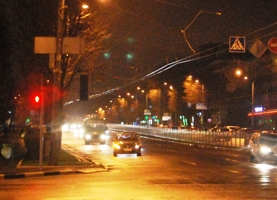
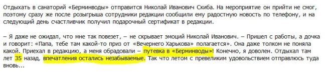

Шпульцеровская премия для СМИ Харькова-2013

Некоторые СМИ Харькова потеряли связь с реальностью. Он искренне считают, что харьковчане не способны сложить "2 + 2" и объективно оценить те информационные посылы, что пытаются вложить в их головы. В 2013-м победителем шпульцеровской премии в Харькове стало издание Вечерний Харьков.
Харьковчане часто хохмят на предмет оригинальнейшей рекламы этого издания.
В сей рекламе это СМИ предлагает подписаться на это издание и выиграть путевку для поездки в санаторий "Берминводы" (!!!). Предполагается, что люди преклонного возраста мечтают попасть именно в это райское место.
Многие пенсионеры Харьковщины (очевидно, являющиеся целевой аудиторией этой рекламы) опрошены нами на предмет их мнения о таком шансе. Так вот, 14 из 17 опрошенных нами скамеек искренне желают реальному собственнику этого издания тов.Фельдману отдыхать всю жизнь именно в "Берминводах".
В ноябре 2013 мы встретили данного господина на дорожке, ведущей из 4-й "неотложки". По этой разбитой, кривоплитной, травмоопасной дорожке этот господин шел уверенно и смело смотрел в глаза рядовым харьковчанам (которые спотыкались о расколотые плиты и проклинали местных олигархов/власть имущих).
Что ж, отдых в "Берминводах" является для данного господина не самым плохим вариантом для периода после 2015 года.
Заметим: это издание среди своих партнеров указывает подробный Каталог товаров и цен "Барабашово - Харьков" (то есть связь данного СМИ и господина Фельдмана очевидна).
Харьковчанам очень бы хотелось увидеть на страницах "Вечернего Харькова" статьи на темы:
- по каким причинам зарезервированный земельный участок для нового театра на улице Сумской (о-о-очень давно зарезервированный гор.властями) отдан одному из харьковских олигархов по фамилии Фельдман для строительства торгового центра "Аве Плаза"?
- неужели Харькову ТАК не хватало еще одного торгового центра?
- получил ли бюджет Харькова и те самые пенсионеры Харькова те огромные деньги, которые могли бы быть уплачены в случае честной и прозрачной продажи данного участка в самом центре Харькова?
- аналогичные вопросы по новому торговому центру того же олигарха через дорогу от "стекляшки" (метро "Университет")?
- также очень бы хотелось, чтобы "Вечерний Харьков" опубликовал подборку о незаконных поборах с торговцев на фельдмановском рынке "Барабашова", а также о теневых потоках денежных средств, связанных с данным рынком…
- ну и самое главное: как часто и как долго господин Фельдман, члены его семьи отдыхают в упомянутом санатории?
Если говорить серъезно, то размер социальной ответственности и размер полученного из собственности города в случае господина Фельдмана соотносятся несправедливо. Причем от Харькова им получено многое по схемам, вызывающим огромные вопросы, которые так или иначе будут заданы господину Фельдману. Так что Харькову Фельдман мог бы помогать более действенно, а не переступать через трещины в 4-й "неотложке".
Лидеры шпульцеровской премии в СМИ Харьковщины будет обновляться, ждем Ваших наблюдений.
Умение трезво смотреть на вещи и чувство юмора приветствуются.
P.s.
